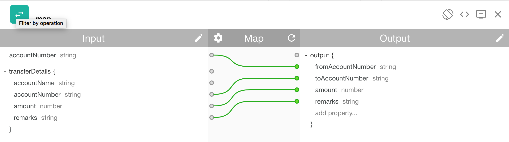
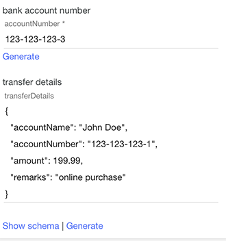

In this lab, you will learn how to create an API that connecting to a **RESTful** backend. It covers define and use **Parameter** and **Definition**, **Inline Schema** and **Map Assembly**.
Objective
In the following lab, you will learn:
- How to define input parameter and definition for the API
- How to use the input parameter and definition in the API Assembly
- How to create inline schema from sample JSON
- How to use Map to create HTTP body for the RESTful backend
Case Study used in this tutorial
In this tutorial, you will be creating new API for a banking customer to initiate a fund transfer to another account. The API will accept JSON body via HTTP POST. You will need to access the parameter in url and JSON body to prepare the input parameter for the RESTful backend.
Before you begin
For this lab, you need to have a Bluemix account and enabling the API Connect Essentials service on your account.
Step by Step Lab Instructions
1.1 - Create the Transfer API Definition
-
Go to the Drafts screen by click on “»” to bring up the side menu and select “Drafts”
-
Select “APIs” tab
-
Click “Add” and select “New API”
-
In the new API pop-up dialog, fill up the details as following:
1.2 - Create Definitions
-
Next, you’re going to define the JSON object for the HTTP body input. The JSON object holds the transfer details.
-
Scroll to Definitions section and click “+” to create new Definition.
-
Click Add Property 4 times and fill out the details as following:
1.3 - Define Parameters
In this section, we will define 2 parameters:
+ First is the parameter in the API URI. The parameter is the user’s bank account number. In the case: https://gateway/transfers/{accountNumber}
+ Second is the parameter in the HTTP body. The parameter is the transfer details which you have defined in the prior steps.
-
Scroll down to Parameters section
-
Click “+” to create a new parameter accountNumber and fill up the details as following. Do note you need to select Path in the Located in drop-down field.
-
Create another parameter transferDetail, and this time will select Body in the Located in and Transfer as Type. Do note the screen doesn’t display Transfer even after you have selected it.
Next, we will define the API endpoint and input parameters for API consumer
-
Scroll to Path section and create a new path. Enter /{accountNumber} as the Path.
-
Click Add Parameter and select accountNumber from the list.
-
Repeat the last step to add transferDetail parameter. Your settings should be as following:
-
Delete the default “Get” operation.
-
Add Operation and select Post.
1.5 - API Assembly
In this section, we will learn how to use Parameters in the Map Assembly.
-
Click on Assemble tab
-
Drag Map assembly and place it before Invoke.
-
Click on “+” to maximize the Map configuration screen.
-
Click on the “pencil” icon to “Edit Input”
-
Click + parameters for operation… button and select post/{accountNumber} operation.
-
Click “Done” to close the “Edit Input” screen.
-
Click on the “pencil” icon to “Edit Output”
-
Click on “+ outputs for operation…”
-
Select “Inline schema” in the Definition drop-down
-
In the “Provide a schema” pop-up dialog, select “Generate from sample JSON”. Copy and paste following sample JSON.
{
"fromAccountNumber":"123-123-123-3",
"toAccountNumber":"123-123-123-3",
"amount":199.99,
"remarks":"online purchase"
}
-
Click “Generate” button. API Connect will generate the schema in YAML format as the following screen:
-
Click “Done” to close the “Provide a schema” dialog.
-
Click “Done” to close the Output.
-
Click accountNumber from Input and link to fromAccountNumber Output. Do the rest as following screen:

-
Click the X to close the Map assembly.
-
Click on Invoke assembly and enter the following URL:
http://www.mocky.io/v2/57f281c90f0000a81ae25309
1.6 - Test API
In this section, we will learn how to test the API in the Assembly.
-
Click on the “Play” button. The test panel will expand at the left.
-
You need to setup the Product for this new API. Enter Transfers in the new product Name. Click Create and Publish button. Then click the next button.
-
Select the post/{accountNumber} Operation to be tested
-
Enter a test parameter for accountNumber 123-123-123-3. For transferDetails, you can click on Generate to let the system generate sample data automatically.

-
Click Invoke button to invoke the API. You should receive response as following:
-
Click on Debug button to inspect the assembly details:
Conclusion
In this lab you learned:
- How to define input parameter and definition for the API
- How to use the input parameter and definition in the API Assembly
- How to create inline schema from sample JSON
- How to use Map to create HTTP body for the RESTful backend